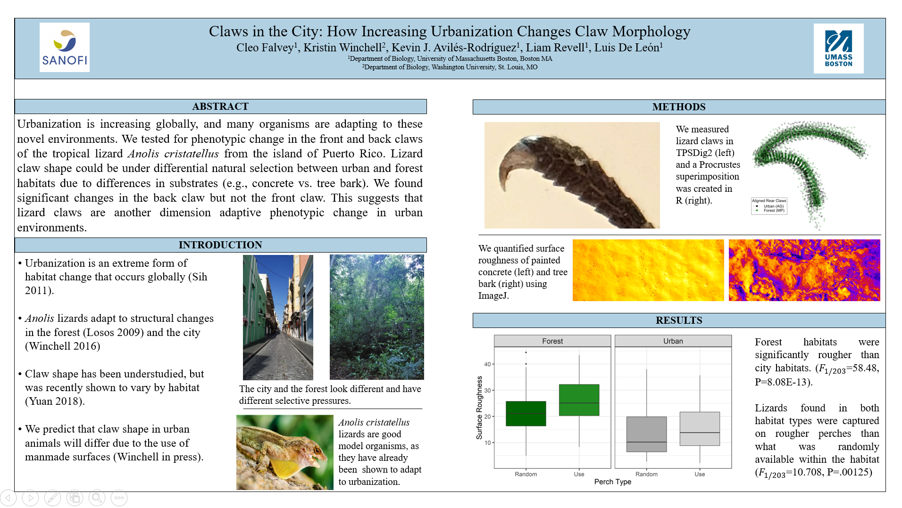
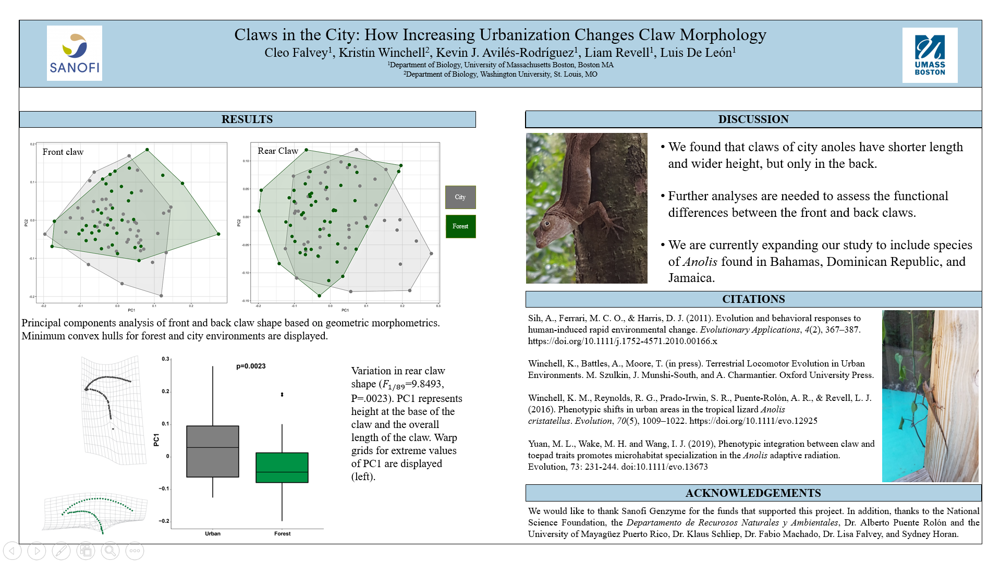
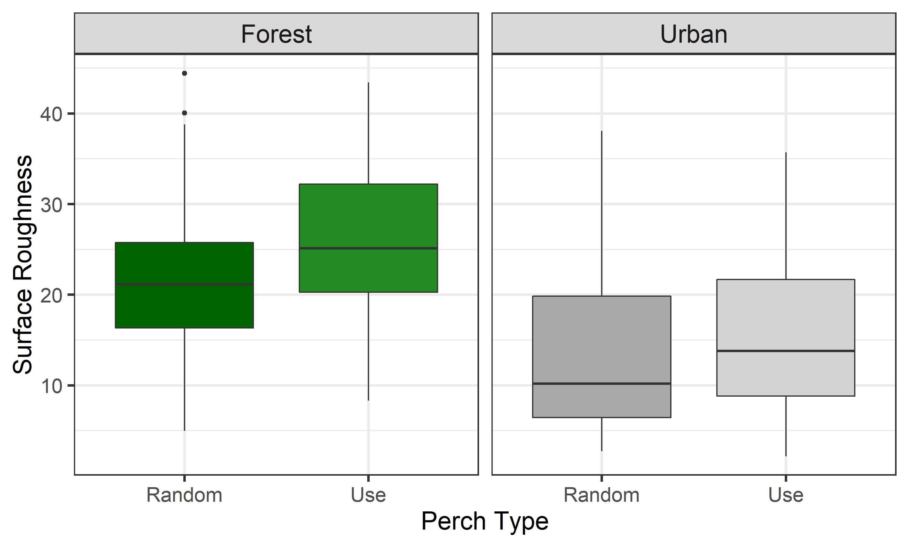

After winning a small research grant with my university, I was asked to create a poster presentation about my work to show off at this year’s showcase, so I’m going to talk a little bit about that in this post!
The Research Group
I am the only undergraduate in the Revell Lab, a group of lovely people who study urban evolution and write R packages used for phylogenetic analyses (see addendum)*.
My project is currently on the effects of urbanization on Anolis lizards. You can see another blog post I wrote for my mentor’s blog about it if you want to learn more about the process behind the poster, here. The general overview of the research is that urbanization affects animal body shape and we want to know how/if claw shape, an important body part for locomotion, is changing.
My Poster

My Graph
Most specifically, I’m proud of the graph that I made for this research! The graph below shows surface roughness, or Ra, which is a measure of shadows in a surface photo and made using a plugin in ImageJ. The boxplot shows the difference in habitat textures between the forest and the city.
The boxplot is faceted by “use” and “random,” which refers to whether the surface was what the lizard was actually captured on or a random nearby perch. These photos are taken in the field to get a sampling of other options of surfaces that the lizards encounter in their respective habitats.

The plot shows that forest habitats were rougher than urban habitats (with a p-value of 8.08E-13!!!! Wow!!!), which makes sense when you consider that forest habitats include bark, sticks, and branches, whilst urban habitats include metal, glass, and concrete. The plot also shows a slight trend towards lizards being found on rougher surfaces in both habitats, but without behavioral data to back it up, we can’t make any wild claims about lizards choosing habitat.
This graph was not that hard to make, as I’ve successfully made boxplots with fills and facets before, but I also ran all my stats (with help from the postdocs and my grad student) in R. So this was a fun R learning experience because I’ve never successfully run an ANOVA before! My ANOVA code is below:
perch_data <- read.csv(file = "surface_roughness_spreadsheet.csv", na = "n/a")
anova2 <- aov(RA~Perch_Type+Context,data=perch_data)
summary(anova2)## Df Sum Sq Mean Sq F value Pr(>F)
## Perch_Type 1 778 778 10.70 0.00126 **
## Context 1 4249 4249 58.43 8.1e-13 ***
## Residuals 204 14835 73
## ---
## Signif. codes: 0 '***' 0.001 '**' 0.01 '*' 0.05 '.' 0.1 ' ' 1
## 5 observations deleted due to missingness